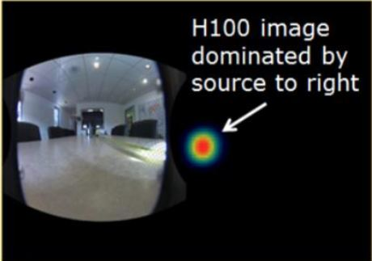

CGiTEC
New Idea for Radiation Safety and Applications
POLARIS
GAMMA-RAY IMAGING SPECTROMETERS
CdZnTe 실시간 방사선 이미징 검출기
P Series
Directional Gamma-Ray Imaging Spectrometer
방사선원의 방향성 탐지를 위한 최고의 솔류션
- P Series 는 원자력발전소와 같이 여러 선원들이 혼재되어 있는 상황에서 특정 선원을 찾아낼 때 적합한 모델입니다.
- 텅스턴 콜리메이터가 내장되어 주위에 강한 선원이 있는 경우에라도 특정방향의 관심 선원을 손쉽게 찾아낼 수 있습니다.
Features
- Isotopic quantification of gamma-ray sources
- Real-time spectroscopy, ID, and imaging
- Includes collimator optimized for your applications
- Air/water tight for easy decontamination
Applications
- Isotopic characterization
- Quantitative analysis of radiation in pipes and ducts
- Military and defense
- Emergencies, incidents, and outages
|  |

P100 |
|
|
P100S |
|